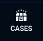
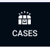
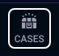
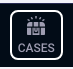
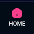
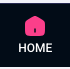

Bottom bar
The phone's shortcut bar, fixed to the window's foot under 900px: Home and Cases, a mark over a small capital name, the current one white with its mark in pink. It is a subset of the rail, never a second model: every item in it exists in the rail (CLAUDE.md, "Baseline"). Everything on this page is drawn by design/system/components/bottom-bar.css through index.css, the same file a screen will load.
Anatomy
A phone's window, 360px. The bar stands on its foot.
Not drawn on a wide screen: from 900px of window the bar is display: none and the rail carries Home and Cases. This frame draws it at any width only so the stand can show it; the page at 360px shows the same bar in the same frame.
It holds one atom and places it: the Icon (level 1), .icon--home and .icon--box, sized to the bar's mark (--size-nav-mark) inside .bottom-bar__mark. Everything else is the bar's own.
| Part | Class or element | What to change there |
|---|---|---|
| The bar | nav.bottom-bar | fixed to the window's foot, --size-bar tall, the ticker's near black with a hairline on top; the items spread across it |
| Item | .bottom-bar__i | a link: the mark over its name, small capitals in grey |
| Mark | .bottom-bar__mark with an .icon | the glyph's box at --size-nav-mark; pink on the current item |
| Current | [aria-current="page"] | the page you are on, white words and a pink mark; set by the screen's markup |
Variants and sizes
One form, in both states of the account: Home and Cases. Sizes are read from the rendered bar above.
- Items = a subset of the rail. Home and Cases, in both states (D-29, D-40). It is below Material's floor of three items, a cost printed in the decisions. A new item enters the rail first.
- Width = the window's. The bar runs the window's width and spreads its items (
justify-content: space-around); its height is--size-barat every width under 900px. - Window = the phone's only. From 900px the bar is not drawn; the page's room for it (
.shellpadding under 900px) is the shell's rule.
Read from the render: the bar , an item , the mark .
When to use
On a phone, on every page, so the two places a person returns to are one press away while the rail is folded into its drawer. The bar holds destinations, never money and never an act: money is never a bar item in either state (CLAUDE.md, "Information architecture"). Its words are the rail's: "Home", "Cases".
Rule and anti-rule
Use it
Under 900px, Home and Cases, the current one marked by the screen. Each item also stands in the Rail, so a phone and a wide screen offer the same destinations.
Take another component
The full list of destinations is the Rail, in its drawer on a phone. Money and Add funds are the Header's. Trust and the law are the Footer's. A way to play that is not launched is a Rail row marked Not launched yet, never a bar item.
States
Live at rest, on this page's theme: point at Cases, reach the items with Tab. Current is a value the screen's markup sets, aria-current="page", never a class.
The live instance.
Snapshots of the same items, dark on the left and light on the right. The base set is shot once on Cases; current is shot on Home, as the markup sets it.


--text-on-plate

--line-focus-on-plate

--text-on-plate, --text-link-on-plate- The same answer, said once: the current item keeps its look under the pointer (its hover is not drawn), and takes the same ring as Cases on focus. There is no press look: kit.css draws none.
- The same in both themes: the bar's ground is the ticker's near black in both, so its words, marks and ring read the on-plate roles, which keep the white, grey and pink kit.css draws. Only the page around the frame changes.
- No disabled look: an item is a destination that exists, or it is not in the bar.
node design/kit/tools/shoot-states.js http://localhost:8765/ bottom-bar # re-shoot after a change to bottom-bar.css or its tokens node design/kit/tools/shoot-states.js http://localhost:8765/ bottom-bar --check # step 9: fails if a snapshot drifted
In the code
| Token | Kind | Dark | Light |
|---|
Read live from tokens.css. One component token, --bottom-bar-edge, the same in both themes (D-266, Q3). One primitive read directly: --color-ticker, the bar's ground, one of the six with one reader per surface (the bar and the rail), waiting for step 9 (tokens-audit.md). The bar is one of the shell's dark plates and keeps its near black in both themes (D-266, Q3): its words, marks, ring and its top edge read on-plate roles, the edge --bottom-bar-edge in the place of --line-soft, which turned light in the light theme, so the light column above repeats the dark one. The Icon it holds takes the colour of its item's words. Height, mark and type from the primitives.
File: design/system/components/bottom-bar.css, loaded by design/system/index.css in the organisms' group.
<nav class="bottom-bar" aria-label="Shortcuts"> <a class="bottom-bar__i" href="index.html" aria-current="page"><span class="bottom-bar__mark" aria-hidden="true"><span class="icon icon--home"></span></span>Home</a> <a class="bottom-bar__i" href="catalogue.html"><span class="bottom-bar__mark" aria-hidden="true"><span class="icon icon--box"></span></span>Cases</a> </nav>
Stands on, under 900px: Home, the case screen, the catalogue, Deposit, My items, Provably fair, Responsible play, Sign in. Until step 8 those screens still read kit.css; the page's room for the bar stays the shell's rule in kit.css until step 6.